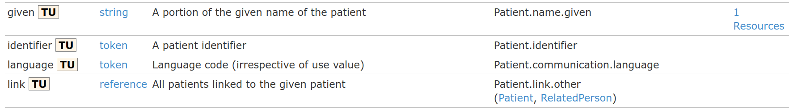

Simple Search
This tutorial will build on the foundation laid out in the Simple Patient tutorial to introduce searching against FHIR resources.
Step 1: Name Searching
Let's start with the simplest of searches, a patient's family name search.
The Simple Patient tutorial uploaded a Patient resource for a Mr Sam Fhirman. Let's try and find that Patient resource by searching on family name. To do this we need to construct a URL starting with the [Service Root URL] followed by the resource type Patient, a question mark character '?' and finished with the search parameters we wish to search with family=Fhirman in this case.
Perform this search in your Postman client using he Http verb GET now, take a few minutes to examine the result returned:
https://sqlonfhir-dstu2.azurewebsites.net/fhir/Patient?family=fhirman
Did you notice that you received a Bundle resource in return? When you perform a search you are more than likely to receive many resource matching your search. In FHIR search results are always returned as a Bundle. A Bundle is used in FHIR to gather a collection of resource into a single instance. The reason there are so many Mr Sam Fhirman Patient resources is due to every student taking part in the Simple Patient tutorial uploading their own instance of the same patient. This may explain why our PAS team is so busy with duplicate patient merging. Of course this should not be the case in the real world. Although the PAS team may have another opinion.
Now would be a good time to go to the FHIR specification to read about the bundle resource. Do that now and come back when you’re done.
Step 2: Extended Search
In the previous step we searched by the patient's family name, but what else can we search upon? The search parameters you can use are Resource type dependant. Each resource type defines the parameters which you can search upon it. Right click and open the Patient resource page in a second browser tab and scroll to the very bottom of the page. Here you will find the list of possible search parameters for the Patient resource. Take a look at some other resource types and the search parameters they define.
In the previous tutorial, Simple Patient, you should have created a new patient resource with your own name as the patient's name. Try and find that resource using your own surname and first name. Remember to reference the FHIR specification to work out which search parameters you will need.
Step 3: Search Parameter Types
The searches we have done so far, family & given, were on simple string datatypes. FHIR defines eight different search datatypes as follows:
Each and every search parameter on each resource page also defines the search parameter data type it uses. The screenshot below is taken from the Patient resource page. Notice that given uses string in column two and that identifier uses datatype token.

FHIR specification Search pageUsing the references above try and answer these questions:
These few questions have focused on the token search parameter datatype but I strongly encourage you to read then entire Search page in the FHIR specification at a later date.